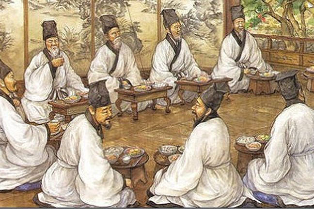
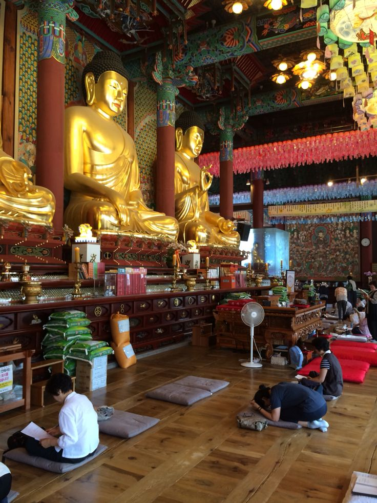
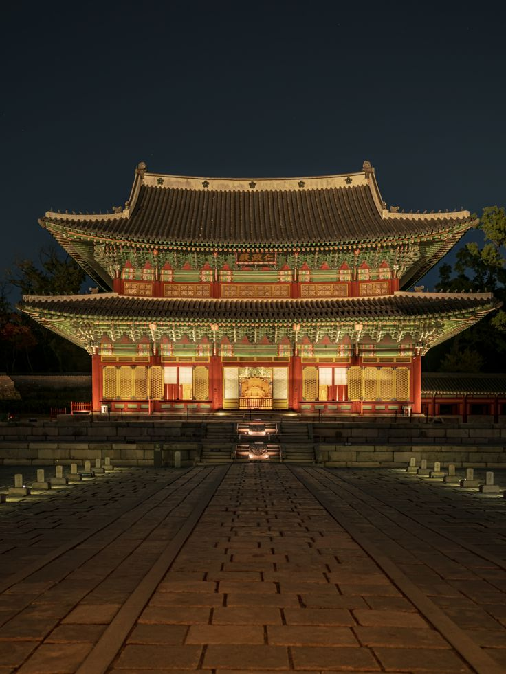
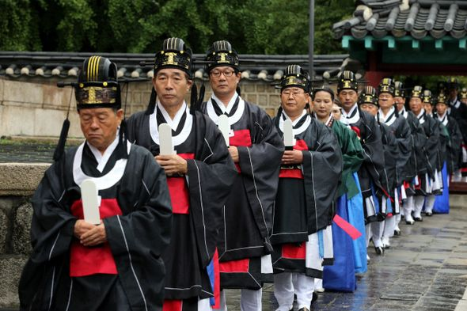
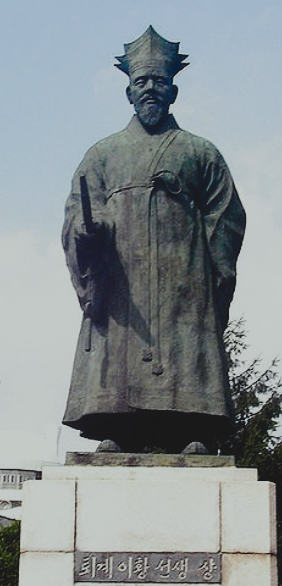
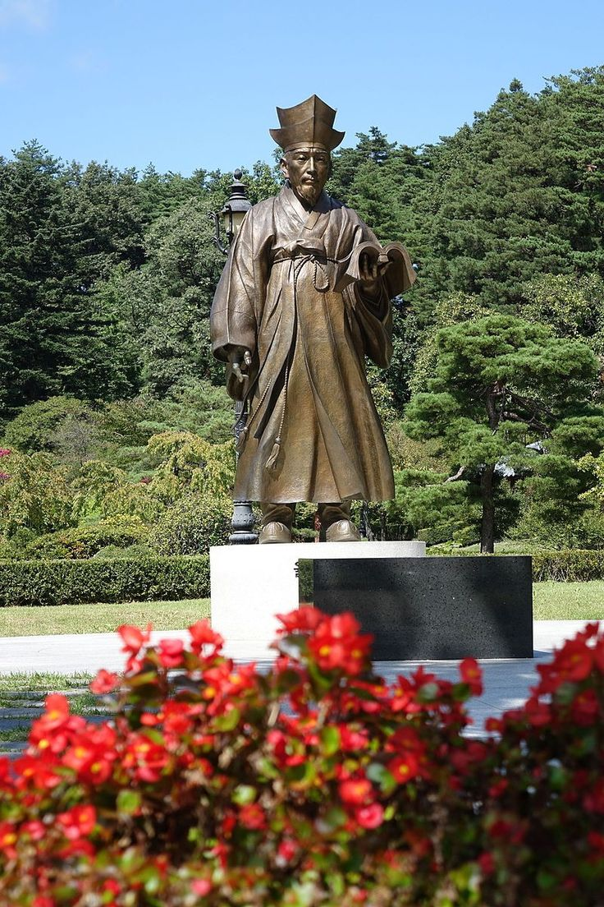

The history of philosophical thought on the Korean peninsula — from early indigenous traditions and the development of Korean Buddhism to Confucian ethics, Neo-Confucian metaphysics, Practical Learning, and modern efforts to rethink philosophy in a changing world.
Korean philosophy developed over many centuries through the interaction of indigenous traditions with intellectual movements that entered the Korean peninsula from the wider East Asian world.Buddhism, Confucianism, and Daoism had all reached Korea by the early centuries of the Common Era, where they encountered existing social institutions, ritual practices, and political cultures. Korean thinkers did not simply reproduce ideas received from elsewhere; they interpreted, criticized, reorganized, and transformed them within distinctive historical and philosophical contexts.
Korean philosophical traditions have often placed unusual emphasis on the relationship between thought and practice. Questions about reality were closely connected to questions about how a person should cultivate character, fulfill responsibilities, govern a community, and respond to the difficulties of ordinary life. Buddhist philosophy explored the nature of mind, enlightenment, and suffering, while Confucian thinkers developed systems of ethical cultivation centered on family, relationships, education, and political responsibility.
During the Silla and Goryeo periods, Buddhism became one of the most important intellectual traditions on the peninsula. Thinkers such as Wŏnhyo developed influential attempts to reconcile apparently competing Buddhist teachings, while other scholars explored consciousness, awakening, and the relationship between different philosophical doctrines. Korean Buddhism therefore became an important contributor to the wider intellectual world of East Asian Buddhism rather than merely a local religious tradition.
The later Chosŏn dynasty brought Neo-Confucian philosophy to the center of Korean intellectual and political life. Korean scholars developed particularly detailed debates concerning Principle (i), material force (ki), human nature, emotion, and moral cultivation. Thinkers such as Yi Hwang and Yi I became central figures in these discussions, while later philosophers associated with Practical Learning questioned how philosophical knowledge could address concrete social and economic problems. This page follows that long history and the continuing development of Korean philosophy into the modern world.
Indigenous ritual traditions, ancestor practices, and early cosmological beliefs shape the intellectual and religious world of the Korean peninsula
Buddhism and Confucian learning become increasingly important during the period of the Three Kingdoms
Wŏnhyo develops influential Buddhist philosophy concerned with One Mind and the reconciliation of apparently conflicting doctrines
The Goryeo dynasty supports Buddhist institutions while Confucian scholarship continues to develop
The Chosŏn dynasty establishes Neo-Confucianism as a dominant intellectual and political tradition
Yi Hwang and Yi I become leading figures in major Korean debates about Principle, material force, emotion, and human nature
Practical Learning and other intellectual movements increasingly address social institutions, reform, empirical knowledge, and changing encounters with the wider world
Korean philosophy confronts colonialism, modernization, nationalism, democracy, global philosophy, and new forms of intellectual exchange

The Korean peninsula occupied a distinctive geographical and cultural position between the Chinese mainland and the Japanese archipelago. Across its history, Korean kingdoms participated in extensive networks of migration, diplomacy, trade, warfare, scholarship, and religious exchange. Ideas from China, Central Asia, India, and other regions could reach Korea through these networks, while Korean monks, scholars, and officials also traveled abroad and contributed to the circulation of knowledge throughout East Asia.
This history makes it misleading to imagine Korean philosophy as either completely isolated or simply derivative of Chinese thought. Korean intellectual traditions were deeply connected to the broader East Asian world, yet Korean thinkers repeatedly developed distinctive interpretations of inherited concepts. The philosophical importance of Korea lies partly in this creative process of adaptation: ideas were translated into new institutions, connected with local concerns, and subjected to new forms of debate.
Buddhism became one of the earliest major philosophical traditions to transform Korean intellectual life. It introduced extensive bodies of literature concerned with consciousness, causation, suffering, enlightenment, and the nature of reality. Buddhist communities also became important institutions of education and scholarship. At the same time, Confucian learning increasingly shaped ideas about ethical relationships, political responsibility, education, and the proper organization of society.
Korean philosophy therefore developed through continuing encounters between different intellectual traditions. These encounters sometimes produced synthesis and mutual influence, but they also generated serious disagreement. Buddhist and Confucian thinkers debated the nature of the mind and the proper relationship between spiritual cultivation and social responsibility. Later Neo-Confucian philosophers disagreed among themselves about the deepest structure of reality and human nature. Korean intellectual history became, in this sense, a long conversation about how knowledge should transform human life. :contentReference[oaicite:1]{index=1}

Buddhism entered the Korean peninsula during the period of the Three Kingdoms and gradually became a major force in religious, political, and intellectual life. Korean monks and scholars studied a wide range of Buddhist scriptures and philosophical traditions that had traveled across Asia from India through Central Asia and China. This inheritance included complex debates about emptiness, consciousness, Buddha-nature, causation, and the possibility of enlightenment.
The diversity of Buddhist teachings created a philosophical problem. Different texts and schools could appear to offer conflicting accounts of reality and spiritual practice. Were these teachings genuinely incompatible, or could they be understood as different perspectives on a deeper truth? Korean Buddhist philosophers became especially important in developing methods for addressing this problem rather than simply choosing one doctrine and rejecting all others.
Wŏnhyo, who lived during the seventh century, became one of the greatest philosophers of Korean Buddhism. He engaged with numerous Buddhist traditions and developed the idea of hwajaeng, often understood as a method of harmonizing or reconciling apparently conflicting doctrines. His work did not assume that philosophical disagreement should always end with the complete victory of one side. Instead, he investigated the different conditions and perspectives through which doctrines emerged.
Wŏnhyo also developed influential reflections on One Mind (ilsim). Drawing on the Awakening of Faith in the Mahāyāna and other Buddhist sources, he explored the relationship between enlightenment and delusion, purity and impurity, and the possibility of awakening. His philosophy became influential far beyond Korea and remains one of the clearest examples of the distinctive intellectual contribution made by Korean Buddhism to the wider East Asian philosophical world. :contentReference[oaicite:2]{index=2}

Korean Buddhist philosophy was not concerned only with constructing theories about the universe. A central question was how philosophical understanding could transform the person who possessed it. Buddhist teachings about suffering and impermanence were connected with practical disciplines intended to change perception, desire, and attachment. Philosophy and spiritual practice therefore remained closely connected.
This practical orientation raised difficult questions about the nature of enlightenment. If all beings possess the potential for awakening, why do human beings remain trapped in ignorance and suffering? If ultimate reality cannot be captured completely through ordinary concepts, what role can language and philosophical argument play in the path toward understanding? Korean Buddhist thinkers approached these problems through commentaries, debates, meditation traditions, and attempts to organize the immense diversity of Buddhist teaching.
Uisang, another major philosopher and monk of the Silla period, became closely associated with the Korean development of Huayan, known in Korea as Hwaeom. This tradition emphasized the profound interdependence of all things. Reality could not be understood adequately by imagining individual objects as completely separate and self-contained. Each thing exists within an interconnected order in which every phenomenon is related to others.
The philosophical significance of this approach extends beyond religious doctrine. It challenges ordinary assumptions about individuality, independence, and the separation between self and world. If existence is fundamentally relational, then understanding one thing may require understanding the wider network in which it appears. Korean Buddhist philosophy thus developed sophisticated reflections on unity and diversity, conceptual disagreement, consciousness, and the possibility of human transformation.

Confucian thought gradually became another major foundation of Korean intellectual life. Classical Confucian texts offered philosophical resources for thinking about virtue, education, government, family relationships, and moral responsibility. Unlike Buddhist traditions, which often focused on liberation from ignorance and suffering, Confucian philosophy concentrated strongly on the ethical organization of life within society.
Korean Confucian thinkers emphasized that moral development could not be separated from concrete relationships. A person existed as a child, parent, friend, student, official, or ruler, and each relationship involved particular responsibilities. The cultivation of virtue therefore required more than private reflection. It demanded education, self-discipline, appropriate conduct, and the continual examination of one's obligations toward others.
These ideas also had political consequences. A ruler was not supposed to possess authority merely through force. Confucian political philosophy connected legitimate government with moral character, education, and responsibility for the welfare of society. The question of how to create an ethical political order therefore became closely connected with the philosophical question of how human beings develop virtue.
By the end of the Goryeo period, new forms of Confucian thought known as Neo-Confucianism were becoming increasingly influential. This movement provided not only an ethical system but also a detailed philosophical vocabulary for explaining the structure of reality, human nature, mind, emotion, and moral cultivation. These ideas would eventually transform the intellectual world of the Chosŏn dynasty and produce some of the most sophisticated philosophical debates in Korean history. :contentReference[oaicite:3]{index=3}
The establishment of the Joseon dynasty in 1392 marked a major transformation in the intellectual history of Korea. Buddhism had played a dominant role during the preceding Goryeo period, but the new dynasty was strongly supported by scholar-officials who regarded Neo-Confucianism as a more suitable foundation for political and social order. This did not mean that Buddhism disappeared from Korean intellectual life. Rather, the relationship between the two traditions became one of sustained criticism, competition, adaptation, and philosophical exchange.
Korean Neo-Confucianism drew heavily upon the philosophical tradition associated with the Chinese thinkers Cheng Yi and Zhu Xi. Its central concepts included i or li, often translated as principle or pattern, and gi or qi, referring broadly to material force or vital energy. Neo-Confucian philosophers attempted to explain how these concepts were related to the structure of the universe, the nature of human beings, moral goodness, and the activity of the heart-mind.
Yet Korean thinkers did not simply repeat Chinese Neo-Confucian philosophy. Over time, they developed distinctive debates concerning emotion, human nature, moral psychology, and self-cultivation. These debates asked how universal moral principles become active within particular human beings. If human nature is fundamentally good, why do destructive emotions and immoral actions occur? How can a person cultivate the mind and transform knowledge into genuine moral practice?
Education became central to this philosophical world. The Confucian ideal was not merely to acquire information but to cultivate oneself through study, reflection, ritual practice, and disciplined moral action. The scholar therefore pursued learning as a process of personal transformation. This ideal of self-cultivation would become one of the defining features of Korean Neo-Confucian thought and would shape both philosophical debate and the institutions of Joseon society.
By the sixteenth century, Korean Neo-Confucianism had developed into a vigorous philosophical tradition with its own major thinkers and controversies. Questions inherited from Zhu Xi were subjected to increasingly detailed analysis, particularly questions concerning the relationship between principle and vital force, the nature of emotions, and the possibility of becoming morally transformed. The result was one of the most sophisticated traditions of moral psychology in East Asian philosophy.

The Four-Seven Debate became one of the most important philosophical controversies in Korean intellectual history. At its center was a question about human emotions and moral life. The "Four Beginnings" were traditionally associated with spontaneous moral responses such as compassion, shame, respect, and the ability to distinguish right from wrong. The "Seven Emotions" referred to broader human feelings, including joy, anger, sorrow, fear, love, hatred, and desire.
The philosophical problem was not simply to classify emotions. Korean Neo-Confucians wanted to understand their origin and moral character. Were the Four fundamentally different from the Seven? Could the Four be explained primarily through i, the normative principle of the universe, while the Seven were more closely connected with gi, the dynamic and material dimension of existence? Because Neo-Confucian philosophy generally understood i and gi as inseparable in concrete existence, these questions created serious metaphysical and psychological difficulties.
Yi Hwang, better known as Toegye, played a central role in developing these questions. His famous exchange with the scholar Ki Daeseung examined the Four and the Seven through detailed philosophical correspondence. The debate was concerned with the relation between moral principle, emotion, and the activity of the heart-mind. It demonstrated that philosophical reflection could move from apparently abstract metaphysics toward highly practical questions about how human beings experience and cultivate moral life.
Yi Hwang placed particular emphasis on the importance of moral cultivation and the careful examination of the inner life. Knowledge alone was not sufficient for wisdom. A person had to develop reverence, sincerity, attentiveness, and disciplined practice so that moral understanding could become part of one's character. His philosophical work therefore connected metaphysical questions about the structure of reality with the everyday challenge of becoming a better human being.

Yi I, known by the pen name Yulgok, was another towering figure of Korean philosophy. Like Yi Hwang, he worked within the Neo-Confucian intellectual framework, but he developed different emphases concerning the relationship between principle and vital force. His philosophy sought to understand their inseparable interaction rather than treating moral principle as something that could be considered independently of the concrete activity through which human beings actually live and act.
Yi I also connected philosophical inquiry closely with public life. Moral cultivation remained essential, but a properly ordered society required more than individual virtue. Education, political institutions, economic conditions, and responsible government all affected the possibility of human flourishing. In this respect, Korean Neo-Confucianism was not limited to abstract speculation about the cosmos; it also developed theories of how moral knowledge should shape the organization of society.
The Four-Seven Debate and the wider disagreements surrounding Yi Hwang and Yi I gave Korean philosophy a distinctive intellectual identity. The debate forced philosophers to investigate the difficult relationship between universal moral principles and concrete emotional experience. How can emotions become morally good or destructive? What role does cultivation play in human transformation? And can a philosophical account of the cosmos adequately explain the complexity of the human mind? These questions continued to influence Korean Confucian thought for generations.
By the later Joseon period, some Korean thinkers increasingly questioned whether philosophical learning had become too absorbed in textual disputes and abstract metaphysical controversy. This concern contributed to the development of intellectual movements commonly associated with Silhak, often translated as "Practical Learning." The term covers diverse thinkers and approaches rather than one completely unified philosophical school, but its representatives shared a growing interest in concrete social and institutional problems.
Practical Learning encouraged scholars to investigate agriculture, land systems, taxation, technology, geography, administration, and the actual conditions experienced by ordinary people. Philosophical knowledge was increasingly judged partly by its capacity to improve human life. A society could not be considered genuinely well ordered if its institutions produced widespread poverty, injustice, or administrative failure. Moral reflection therefore had to confront the material realities of social existence.
One of the most important figures associated with this intellectual world was Jeong Yagyong, widely known as Dasan. He examined questions of government, law, administration, ethics, and human nature while drawing upon the wider Confucian tradition. His work illustrates the continuing transformation of Korean philosophy: classical concepts were not abandoned, but they were reconsidered in relation to practical problems facing the society of his own time.
Silhak also reflected a broader epistemological concern. How should reliable knowledge be acquired? Scholarly authority and inherited texts remained important, but observation, evidence, investigation, and attention to particular circumstances gained greater emphasis. This did not create a simple opposition between tradition and experience. Rather, Korean thinkers explored how classical learning could be brought into dialogue with changing social realities and new forms of knowledge.
The practical orientation of these thinkers expanded the meaning of philosophical responsibility. Philosophy was not only concerned with the perfection of the individual sage. It also had implications for the institutions within which ordinary people lived. Questions about justice, government, education, and economic life therefore became part of a wider inquiry into what a humane and morally responsible society should look like.
The nineteenth and twentieth centuries brought profound political and intellectual changes to Korea. The older Joseon order encountered increasing pressure from international powers, new technologies, Christianity, modern science, and Western political ideas. Japanese colonial rule from 1910 to 1945 introduced another decisive historical context in which questions of identity, cultural survival, political authority, and modernization became urgent philosophical concerns.
Modern Korean philosophy cannot be understood simply as the replacement of Confucianism or Buddhism by Western thought. Older traditions continued to provide intellectual resources through which new problems were interpreted. Confucian ideas about moral cultivation, social responsibility, education, and human relationships remained important, while Buddhist philosophy continued to shape discussions of consciousness, suffering, selfhood, and liberation.
Korean intellectuals also engaged with a wide range of modern philosophical traditions, including idealism, Marxism, pragmatism, phenomenology, existentialism, analytic philosophy, and theories of democracy and human rights. Universities became important institutions for the academic study of philosophy, creating new forms of engagement with both East Asian and European intellectual traditions. Translation, interpretation, and comparative philosophy became essential parts of this modern philosophical landscape.
The division of the Korean peninsula after the Second World War created radically different political and intellectual environments in North and South Korea. In the Republic of Korea, rapid industrialization, democratization, and globalization generated new debates about economic development, political freedom, technology, education, gender, culture, and the relationship between individual identity and collective responsibility. Korean philosophers increasingly participated in global philosophical conversations while continuing to examine their own intellectual heritage.
Contemporary interest in Korean philosophy has also encouraged scholars to reconsider older assumptions about the history of philosophy. Korean thought contains important traditions of Buddhist reflection, Confucian moral psychology, metaphysical debate, political philosophy, practical learning, and modern critical theory. Rather than representing a single unchanging worldview, its history reveals continuing reinterpretation as philosophers responded to new social conditions while arguing with the intellectual inheritances of the past.
The continuing significance of Korean philosophy lies partly in this ability to connect self-cultivation with social responsibility. From debates about the heart-mind and human emotion to discussions of institutions and practical reform, Korean thinkers repeatedly asked how philosophical understanding should become part of lived experience. The question remains relevant today: knowledge may describe the world, but how can knowledge also contribute to the moral transformation of individuals and societies?
The major thinkers associated with the long and diverse development of Korean philosophical thought, from Buddhist and Confucian traditions to Neo-Confucian moral psychology and Practical Learning.
One of Korea's greatest Buddhist thinkers, known for efforts to reconcile apparently conflicting Buddhist doctrines and for his philosophy of harmonization.
A major Buddhist philosopher associated with the Hwaeom tradition, emphasizing the profound interdependence and interconnectedness of all phenomena.
A major Korean Buddhist reformer who developed influential approaches to meditation, wisdom, and the relationship between sudden awakening and gradual cultivation.
An influential early Joseon thinker who helped establish Neo-Confucianism as a central intellectual and political framework of the new dynasty.
A major Neo-Confucian thinker known for his distinctive reflections on principle, vital force, the cosmos, and the unity of reality.
One of the greatest Korean Neo-Confucian philosophers, famous for his work on moral cultivation, the heart-mind, principle, vital force, and the Four-Seven Debate.
A major Korean philosopher who developed influential interpretations of Neo-Confucian metaphysics while connecting moral cultivation with education, government, and social responsibility.
An important late Joseon scholar associated with the development of Practical Learning and a wide-ranging interest in society, history, institutions, and concrete human problems.
One of Korea's most important late Joseon thinkers, known for his extensive work on ethics, government, law, administration, and practical approaches to social reform.
Wonhyo
Uisang
Jinul
Yi Hwang (Toegye)
Yi I (Yulgok)
Jeong Yagyong (Dasan)
Jeong Yagyong (Dasan)
Late Joseon Intellectual Tradition
Korean philosophy developed through continuous interaction with the wider intellectual traditions of East Asia, particularly those of China and Buddhism's broader transregional world. Yet these interactions did not produce mere imitation. Korean Buddhist thinkers developed distinctive approaches to doctrinal reconciliation and meditation, while Korean Neo-Confucians transformed inherited metaphysical concepts into detailed investigations of emotion, moral psychology, and self-cultivation. Korean philosophy therefore became an important contributor to the wider history of East Asian thought rather than simply a recipient of external intellectual traditions.
The philosophical debates surrounding Yi Hwang, Yi I, and the Four-Seven problem became especially important because they examined the difficult relationship between metaphysics and lived human experience. The question of how principle and vital force are related became inseparable from questions about emotion, moral failure, and personal transformation. Later Korean Confucian thinkers continued these discussions through new controversies concerning human nature, the heart-mind, and the possibility of moral cultivation. :contentReference[oaicite:1]{index=1}
The Practical Learning traditions of the later Joseon period also expanded philosophical attention toward institutions and social conditions. Thinkers increasingly examined whether inherited moral ideals were being realized in actual political and economic life. Questions concerning government, law, education, agriculture, taxation, and social welfare became connected to broader philosophical concerns about justice and human flourishing. This practical orientation helped demonstrate that philosophy could address not only the cultivation of the individual but also the structure of society.
In the modern world, Korean philosophy has continued to develop through encounters among Confucianism, Buddhism, Christianity, Western philosophy, modern science, political theory, and global intellectual movements. Contemporary scholarship has also increasingly emphasized the importance of Korean philosophical traditions within the broader history of world philosophy. The study of these traditions challenges the assumption that philosophical creativity belongs to only a small number of civilizations and reveals a long history of reflection on consciousness, morality, knowledge, society, and human existence.
Time Period: Ancient Korea to the modern and contemporary philosophical traditions of the Korean peninsula
Key Periods: Three Kingdoms, Unified Silla, Goryeo, Joseon, colonial modernity, and contemporary Korea
Major Traditions: Korean Buddhism, Confucianism, Neo-Confucianism, Practical Learning, modern philosophy, and contemporary Korean thought
Major Figures: Wonhyo, Uisang, Jinul, Jeong Dojeon, Yi Hwang, Yi I, Yi Ik, and Jeong Yagyong
Central Questions: What is the nature of reality? How are emotions related to moral life? How can human beings cultivate themselves? And how should philosophical knowledge shape society?
Major Themes: Harmony, interdependence, enlightenment, moral cultivation, human nature, the heart-mind, emotion, principle, vital force, and social reform
Lasting Influence: East Asian Neo-Confucianism, Buddhist philosophy, Korean education and intellectual culture, and contemporary comparative philosophy
While Korean thinkers developed distinctive traditions of Buddhist philosophy, Neo-Confucian moral psychology, and Practical Learning, Japan was developing its own complex philosophical history. Japanese thought absorbed and transformed influences from Buddhism, Confucianism, Daoism, and Shinto while producing distinctive traditions of Zen, Kyoto School philosophy, ethics, aesthetics, and reflection on the relationship between self, nature, and society.